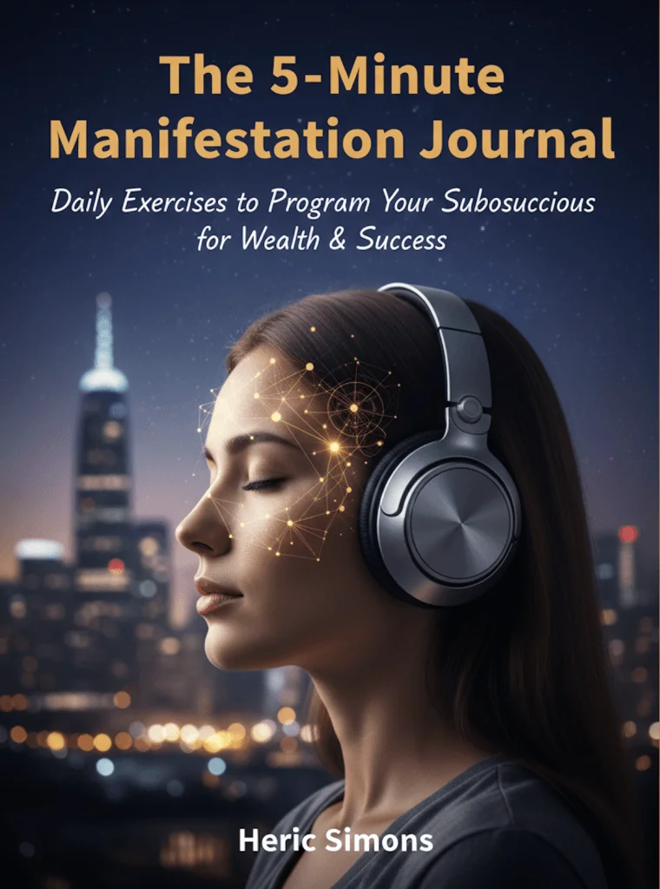
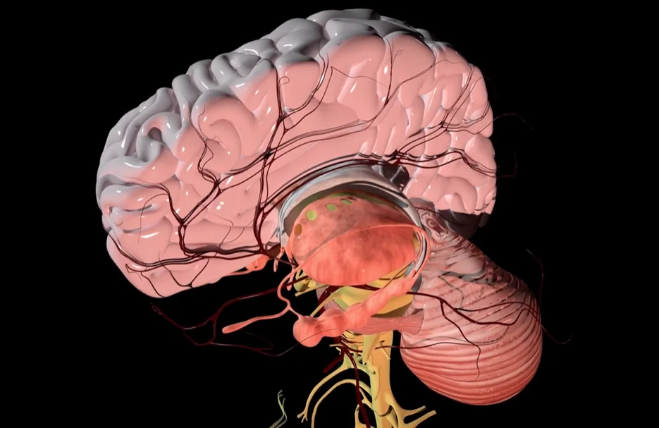

Digital audio program · Headphones · 7 to 20 minutes a day · Adults 18+
Quantum Brainwave Protocol: A Daily Headphone Audio Program For A Calmer, More Focused Few Minutes
Quantum Brainwave Protocol is a digital audio program for adults who want a short, quiet listening habit. You put on stereo headphones, choose a track and press play, with no meditation experience needed. The seller says its tracks use binaural beats and isochronic tones to nudge the mind toward relaxed, focused states. Those beats are real, and some small studies see mild effects on mood, but the evidence is mixed, no study of this program is known, and the seller's wealth, "quantum" and "universe is listening" talk goes well beyond anything research shows. This page explains what you actually get, which claims we leave out, how to listen safely, what it costs and how the 60-day refund works.*
- Three audio tracks and three reading extras
- A single $59 digital purchase, instant access
- Safety notes for seizures, driving and hearing
- A 60-day money-back guarantee through ClickBank
- 1Check your health firstask a doctor if unsure1 min
- 2Put on stereo headphoneskeep the volume low1 min
- 3Press play, sit or lie downnever while driving7-20 min
- 4Note how you feela few written lines2 min
| Epilepsy or past seizures? | Ask first |
| Expecting money to follow? | Read this |
| Treating insomnia or anxiety? | Not a treatment |
Secured payment • Encrypted checkout • 60-day guarantee
Related: Claims we skip · FAQ · The blog
*This is a digital audio program for relaxation and focus. It is not a medical device or treatment, and the statements on this website have not been evaluated by the Food and Drug Administration.

An animated teaching sketch, not data. Illustration.
At A Glance
What We Can Say About Quantum Brainwave Protocol
The facts that hold up, reported as the seller states them.
- Digital product
Instant Access
Downloads after checkout, nothing shipped.
- $59 once
One-Time Price
The $197 "regular price" is not repeated.
- ClickBank
Third-Party Checkout
Payment is handled by ClickBank.
60-Day Refund
Requested through ClickBank support.
No "scientifically proven" badges appear here, because no study of this program exists. See the quick answers and the claims we skip.
Read the claims first, then the checkout.
60-day money-back guarantee · Buying checklist · Price and refund
What Is It
What Is Quantum Brainwave Protocol, In Plain Words?
It is a set of audio files, three tracks and three reading extras, sold as a digital download.*
The tracks are said to use binaural beats, a slightly different tone in each ear, and isochronic tones, evenly spaced pulses. The seller names the tracks Wealth Frequency, Deep Sleep Eraser and Genius Focus and suggests 7 to 20 minutes a day.
It is not a medical device, not a treatment and not a way to earn money.
Related: What is inside · Binaural beats, the studies · Claims we skip
See What Is InsideSeller artwork, as supplied. An illustration, not data.
Pricing
Quantum Brainwave Protocol Price: $59, One Time
A single digital offer, with a 60-day refund.
Digital Program
- Three audio tracks
- Three reading extras
- ClickBank checkout
- 60-day money-back guarantee
The seller also shows "Regular Price $197" and "For Today Only $59", and bonus values of $47, $39 and $27. Nobody is shown paying $197 and the values are invented price tags, so we state only the $59 price. Confirm the final terms at checkout. Price and refund · Buying checklist · Access and delivery
Sixty Days
Quantum Brainwave Protocol's 60-Day Money-Back Guarantee
The seller advertises a 60-day money-back guarantee, requested through ClickBank's customer support within 60 days of purchase. Because the product is digital, nothing needs to be sent back.
Note the purchase date and set a reminder around day 45. See the refund policy and the sixty-day refund steps.
Check The Offer With A Guarantee The steps in detail →Extras
Quantum Brainwave Protocol Extras: Three Titles, Reviewed
Reading and journaling, per the seller.

The other two titles, "101 Signs The Universe Is Listening" and "The Scientific User Manual", have covers that promise a "wealth organ" and "proof" the protocol works, so we show no covers. The seller's $47, $39 and $27 values are not repeated. See the bonus titles reviewed and money and manifestation claims.
Related: Access and delivery · Refund policy · Driving and safety
How It Works
How Quantum Brainwave Protocol Is Meant To Be Used
The seller says to sit or lie down in a quiet place, wear headphones, choose a track and press play, for about 7 to 20 minutes a day.*
- Check your health if you have seizures, hearing or mental health conditions.
- Use stereo headphones at a low volume.
- Choose a track and press play, seated or lying down.
- Never listen while driving or using machinery.
- Decide inside the 60-day window.
Related: How to listen · Headphones and a routine · The following response
One listening session. Illustration.
The five named ranges. Illustration.
The seller's graphic calls beta waves "the beta trap". All ranges are normal and present in a healthy brain, so that graphic is left out. What brainwaves are →
What's Inside
Inside Quantum Brainwave Protocol: Three Tracks And Three Extras
What each is and what research says. The contents in detail →
The Offer At A Glance
What is listed, and what is not.
| Quantum Brainwave Protocol, as the seller lists it | Detail |
|---|---|
| Format | Digital audio program, instant access after checkout, per the seller |
| Method | Binaural beats and isochronic tones, said to target theta, alpha, delta and gamma ranges |
| Track 1 | Wealth Frequency, 7 minutes |
| Track 2 | Deep Sleep Eraser, 20 minutes |
| Track 3 | Genius Focus, a gamma-range session; length not stated |
| Suggested use | Headphones, 7 to 20 minutes a day, in a quiet place |
| Extras | The 5-Minute Manifestation Journal, 101 Signs The Universe Is Listening, The Scientific User Manual |
| Price | $59 one time |
| Checkout and refund | ClickBank, 60-day money-back guarantee |
How to read it: this is a list of what is promised, not a test of it. The seller does not publish track lengths for all sessions, the frequencies used, or any study of the program itself.
Who made it: the seller says "a team of audio engineers" and no named scientist, while the bonus covers show an author name, so the creator is not clearly identified.
General research strength. Illustration.
Track lengths we know. Illustration.
A fair summary: binaural beats show small to moderate effects on anxiety in some studies, mixed results for attention and memory, limited evidence for sleep, and nothing for wealth, and no study of this program is known.* See the blog on binaural beats, isochronic tones, theta and creativity and audio for sleep.
Seizure disorder, tinnitus or a mental health condition? Ask first.
Honest information first · Seizures and epilepsy · Mental health and sleep
Safety
Quantum Brainwave Protocol Safety: Seizures, Driving, Hearing, Mood And Money
Six reasons to ask first.
Seizures First
Rhythmic stimulation can matter for people with epilepsy, so ask a doctor first if you have had a seizure. Never listen while driving or using machinery, and keep the volume low. See seizures and epilepsy and volume and hearing.
Illustration.
Illustration.
A Program Is Not Care
Sleep, mood and focus problems have treatable causes. See when to see a doctor.
| If you | Then |
|---|---|
| Have epilepsy or past seizures | Ask first. See seizures and epilepsy. |
| Plan to listen while driving or working with machinery | Do not. See driving and safety. |
| Have tinnitus or a hearing condition | Ask an audiologist. See volume and hearing. |
| Have anxiety, low mood, insomnia or trauma | It is not treatment. See mental health and sleep. |
| Hope it will improve your finances | Be careful. See money and manifestation claims. |
| Have a seizure or blackout, or thoughts of self-harm | Seek emergency care at once. |
Stop And Get Help For
Dizziness, headache or nausea, new ringing, panic or strange thoughts, or a seizure or blackout at any time.
Not For Children
Not for anyone under 18 without a doctor and a parent or guardian.
Illustration.
Benefits
What Quantum Brainwave Protocol Aims To Support, And Where It Stops
Goals, never promises. The benefits explained →
A trial window
A 60-day money-back guarantee.
Illustrative emphasis, not measured.
Habits Carry The Weight
Sleep, movement, food and company do more for mood and focus than any audio. See what Quantum Brainwave Protocol aims to support and how to judge brain audio claims.

Seller artwork: an anatomy illustration, not evidence for the program.
Value
Is Quantum Brainwave Protocol Worth $59? The Honest Sums
The price is one time, and the refund window is 60 days.
Digital Program
- Three audio tracks
- Three reading extras
- ClickBank checkout
- 60-day money-back guarantee
Cost per day of use. Illustration.
The Sums
$59 over 30 days of daily use is about $1.97 a day, over 90 days about 66 cents, over a year about 16 cents, but only if you really keep listening. See price and refund.
Try It Honestly
If you want a calm listening habit, give it two weeks, keep notes, and use the refund window if it is not for you. See the buying checklist and the refund steps.
Sixty days. Illustration.
Customer Reviews
Quantum Brainwave Protocol Customer Reviews: Questions And Honest Answers
Individual buyers cannot be verified, so no star ratings, counts or named testimonials appear here, and the portraits supplied are illustrative images only. The seller's page prints three mild five-star stories with names and states, and we do not repeat them. Verified reviews will be added when they can be shown in full, critical ones included.
Illustrative image, not a customer.
Does it really change my brainwaves?
Binaural beats are real, and some studies see small effects on anxiety and mood. Results are mixed for attention and memory, and no study of this program is known.
Illustrative image, not a customer.
Can the Wealth Frequency track make me money?
No. Nothing in research links any sound to wealth. Treat it as a short calm listen, and do not make money decisions because of it.
Illustrative image, not a customer.
Is it safe?
It is low risk for most adults, but never listen while driving, keep the volume low, and ask a doctor first with a seizure disorder, hearing condition or mental health condition.
Send yours
Tried Quantum Brainwave Protocol? Email contact@quantumbrainwaveprotocol.com with your order number and an honest account, kind or critical. Verified reviews can appear here.
Common questions
Evidence, safety, money and refunds. See the quick answers.
Solid facts
The contents, the price and the refund steps are spelled out here and in the blog.
Questions
Quantum Brainwave Protocol Questions, Answered Carefully
What is Quantum Brainwave Protocol?
A digital audio program of listening tracks based on binaural beats and isochronic tones, marketed for relaxation, focus and a calm mindset.
What is in it?
Three tracks named Wealth Frequency (7 minutes), Deep Sleep Eraser (20 minutes) and Genius Focus, plus three reading extras.
How do I use it?
Headphones, a quiet place, 7 to 20 minutes a day, per the seller.
Does it really change my brainwaves?
Binaural beats are real and some studies see small effects, but results are mixed, and no study of this program is known.
Can it help me make money?
No. Nothing in research links any sound to wealth, and we do not repeat that claim.
Is it a treatment for insomnia or anxiety?
No. It is not a medical treatment. Relaxation audio may help some people wind down.
Is it safe?
Generally low risk, but never listen while driving, keep the volume low, and ask a doctor first with seizure disorders, hearing conditions or mental health conditions.
What does it cost?
$59, one time, through ClickBank. The seller's $197 regular price is not repeated here.
Is it a subscription?
The seller presents it as a one-time purchase; confirm on the checkout page.
How does the refund work?
A 60-day money-back guarantee, requested through ClickBank support.
Who made it?
The seller says a team of audio engineers; the bonus covers show an author name, so the creator is not clearly identified.
When should I see a doctor?
For dizziness, new ringing, panic, a seizure or blackout, or if sleep, mood or focus problems persist.
More Quantum Brainwave Protocol answers → · Seizures and epilepsy →
From The Blog
The Quantum Brainwave Protocol Notebook: Ten Linked Entries
Brainwaves, binaural beats, sleep, manifestation and how to judge claims.
What Are Brainwaves?
Five named ranges.
EvidenceBinaural Beats: What Studies Show
Small, mixed effects.
BasicsIsochronic Tones, Explained
Evenly spaced pulses.
EvidenceThe Frequency Following Response
A real effect, a big leap.
EvidenceTheta State And Creativity
Limited evidence.
SleepAudio For Sleep: What Helps
Routine first.
ClaimsNeuroplasticity: Myths And Facts
Practice matters.
ClaimsManifestation Journaling
Plans, not magic.
RoutineHeadphones And A Listening Routine
Low volume, quiet place.
ClaimsHow To Judge Brain Audio Claims
Four questions.
Ready When You Are
Decide What You Want, Then Choose Quantum Brainwave Protocol
A short headphone habit for $59, three tracks, three extras and a 60-day money-back guarantee through ClickBank. Order if you want a calm listening routine, not a money method, and once you have checked the safety notes for seizures, driving and hearing. See the buying checklist and price and refund.
- No study of the program is known
- Never listen while driving
- It will not make money
- No promise of results
The Details
The Quantum Brainwave Protocol Details, As The Seller Lists Them
Format, tracks, extras, price and refund. What is inside →
| Quantum Brainwave Protocol, as the seller lists it | Detail |
|---|---|
| Format | Digital audio program, instant access after checkout, per the seller |
| Method | Binaural beats and isochronic tones, said to target theta, alpha, delta and gamma ranges |
| Track 1 | Wealth Frequency, 7 minutes |
| Track 2 | Deep Sleep Eraser, 20 minutes |
| Track 3 | Genius Focus, a gamma-range session; length not stated |
| Suggested use | Headphones, 7 to 20 minutes a day, in a quiet place |
| Extras | The 5-Minute Manifestation Journal, 101 Signs The Universe Is Listening, The Scientific User Manual |
| Price | $59 one time |
| Checkout and refund | ClickBank, 60-day money-back guarantee |
How to read it: this is a list of what is promised, not a test of it. The seller does not publish track lengths for all sessions, the frequencies used, or any study of the program itself.
Who made it: the seller says "a team of audio engineers" and no named scientist, while the bonus covers show an author name, so the creator is not clearly identified.
This is a digital audio program, not a medical device or treatment. See the disclaimer.
References
Independent Reading For Quantum Brainwave Protocol Shoppers
None of them tested this program. Our blog digs into each part →
These organizations do not endorse, sponsor or have any affiliation with Quantum Brainwave Protocol or this website. See also the disclaimer.